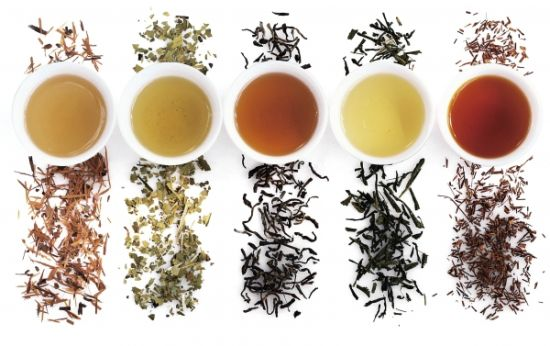

Click Map to original page for detail information
Main Styles
The following in no particular order.
Green Tea
Green tea, looking at the fermentation chart above, has 0% fermentation, so it is in its pure form. It is also known to be a very healthy tea to drink and has become the most categorized tea from our experience and research.
Oolong Tea
After green tea, we have Oolong as the next most popular category of Chinese tea.Also, when looking at the fermentation chart, this style tea sits in the middle with a 30 – 60% range.
Black Tea
The third of the most popular tea categories is black tea. This has the highest level of fermentation.
Yellow Tea
The fourth most popular category of tea is yellow tea. This is the second lowest fermentation tea just behind green tea, with a 10 to 20 percent range.
Red Tea<
red tea has a slightly lower amount of fermentation than black tea, with an 80 to 90% range.
White Tea
Not so famous as the others, it is the third highest level of fermentation of the six, with a 20 – 30% range.